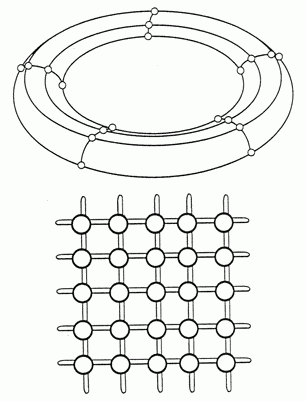

Sistema Imune: Complexidade e Simulação Baseada em Agentes
Introdução
Porque obter imensas quantidades de dados não permite o entendimento do sistema imune como um todo?
Complexidade
"Phenomena which emerge from a collection of interacting objects."
- Neil Johnson
Immunity as a Swarm Function
Charles G. Orosz
Swarm Intelligence
"The emergent collective intelligence of groups of simples agents"
- Eric Bonabeau

Características Swarm-Like
- Feedback Positivo - permite a criação de novas estruturas
- Feedback Negativo - estabiliza novas estruturas
- Amplificação de Flutuações - descoberta de novas soluções
- Interações Multiplas - reforça outras características
Caos
Building a Computer Immune System
Stephanie Forrest
"We were surprised at how many feature we were forced to incorporate in order to achieve acceptable performance"
Immune System as a Cognitive Element
Irun R. Cohen
"The molecules of the immunity are simultaneously the language of immune comunication and a functional representation of the stimuli to wich the immune system responds"
How Does the Immune System See to It That it is Doing a Good Job?
Lee A. Segel
Simulação Baseada em Agentes
Simulação de ações e interações de agentes simples e autônomosAgente

Malha

Tempo
Instantes representam unidades não uniformes de tempo, mas não modificam a ordem dos eventos
Sinais como agentes
Abstrações de citocinas e quimiocinas, que se difundem pela malha
Zonas

Parâmetros Iniciais
Determinados experimentalmente e por um processo iterativo
Resultados
Infecção Viral
Tipos de Respostas Imunes
- Vitória
- Derrota
- Hiper-resposta (Exaustão da memória do computador)
Número Inicial de Células Dendríticas

Eliminação de Agentes

Adição de Agentes

Agentes Ativos


Conclusões
- O sistema imune é extremamente complexo e deve ser tratado como tal
- Não há agente central no sistema e seu comportamento global é consequencia do comportamento de agentes simples
- Simulações Baseadas em Agentes são simuladores efetivos deste tipo de sistema
Referências
- http://digitalunion.osu.edu/r2/summer06/sass/index.html
- Virginia A Folcik, Gary C An, Charles G Orosz, The Basic Immune Simulator: An agent-based model to study the interactions between innate and adaptive immunity, Theor Biol Med Model. 2007; 4: 39.
- Charles G. Orosz, Forum: How Complexity Helps to Shape AlloImmunity, 2001
- Wikipedia